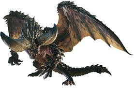

네르기간테 ( Nergigante )
Monster Hunter: World 몬스터 헌터 시리즈에 등장하는 고룡종 몬스터로, 몬스터 헌터: 월드에 처음으로 등장하였고 해당 작품의 표지를 장식한 간판 몬스터이다. 골격은 마가라 계열. 몬스터 헌터: 월드의 주 무대가 되는 신대륙에서 모습을 드러낸 새로운 고룡종이며, 같은 시리즈에 등장하는 조라 마그다라오스처럼 스토리상 중요한 요소 중 하나인 고룡 이동 현상과 관련되어 있는 것으로 추정된다.

다른 고룡종들처럼 네르기간테 또한 신비로운 능력을 가지고 있는데 그건 바로 다른 몬스터들보다 뛰어난 재생 능력이다. 상처가 나거나 가시가 떨어져 나가도 빠른 시간 내에 부상 부위를 치유할 수 있고, 상처가 아문 자리는 이전보다 더욱 단단하고 위협적으로 변한다고 한다. 이러한 능력을 파악하고 있는 네르기간테는 맹렬한 물리 공격을 통해 일부러 몸에 붙어 있는 가시를 떼어내고 더욱 발달된 가시를 재생시키기도 한다. 후지오카 카나메 왈, 파괴와 재생이라는 키워드를 바탕으로 디자인한 몬스터라고.